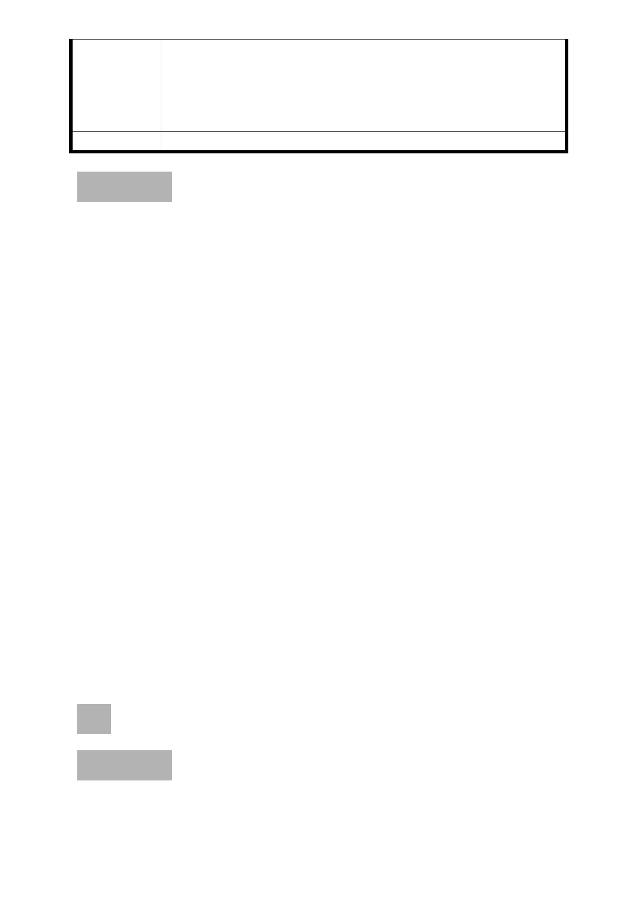

法，貶值時，也可運用相同類似方法，在推動政策會更加
順暢。
2. 82 年變更公園用地，並無適當補貼，造成農民無故的損
失，應該將以當年農地的價值乘上經濟發展指數作為徵收
的依據。
委員會決議 錄案供市府參考。
討論事項 五
案名：劃定臺北市大安區仁愛段六小段 206 地號等 15 筆土地為更
新單元
案情概要說明：
一、本更新單元位於大安區忠孝東路四段 205 巷以東、敦化南路
一段 161 巷 69 弄以西、敦化南路一段 161 巷以南及敦化南路
一段 187 巷以北所圍街廓之北側，計畫面積 2,148 平方公尺。
二、本案更新單元土地使用分區為第四種住宅區，臨忠孝東路四
段 205 巷一樓多有零售業等小型商業分布。更新單元內共計
6 棟合法建築物，皆為 4 層樓加強磚造建物，屋齡多數超過
40 年。
三、本件係市府以 98 年 12 月 22 日府都新字第 09831627500 號
函送到會。
四、申請單位：王青方。
五、辦理單位：臺北市政府。
六、法令依據：都市計畫法第 66 條、都市更新條例第 5 條、第 6
條、第 8 條、第 11 條及臺北市都市更新自治條例第 15 條。
七、本更新單元劃定業經市府審查符合「臺北市都市更新自治條
例」劃定基準及環境評估標準。
決議：本案更新單元劃定範圍照案通過。
討論事項 六
案名：劃定臺北市大安區懷生段二小段 42 地號等 1 筆土地為更新
單元
- 20 -